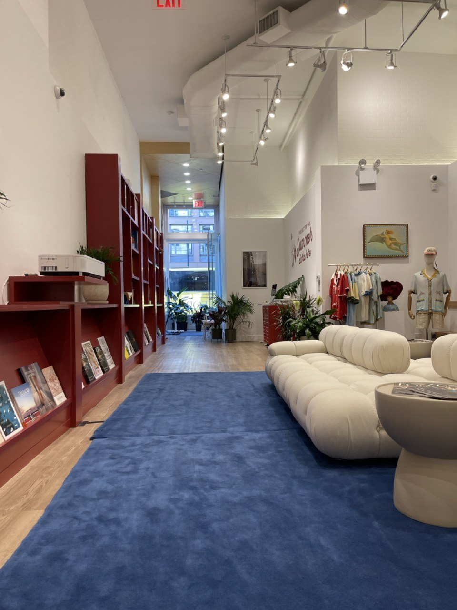
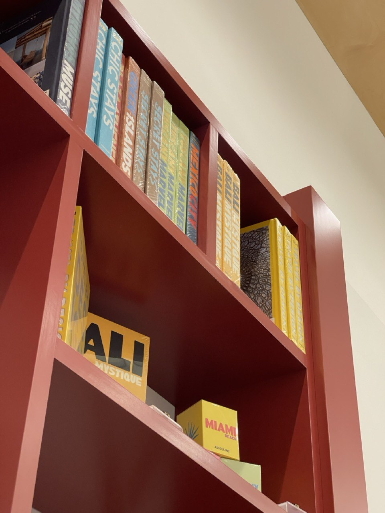
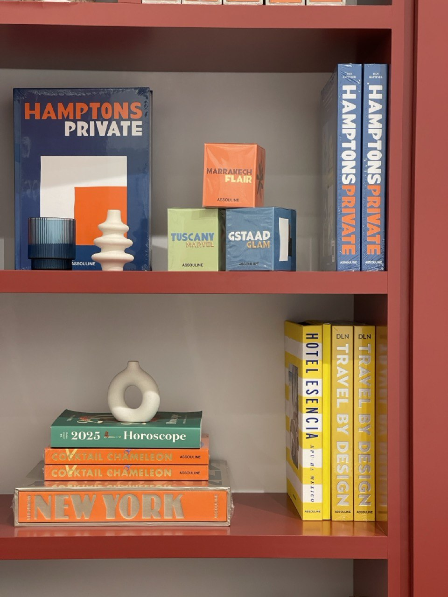
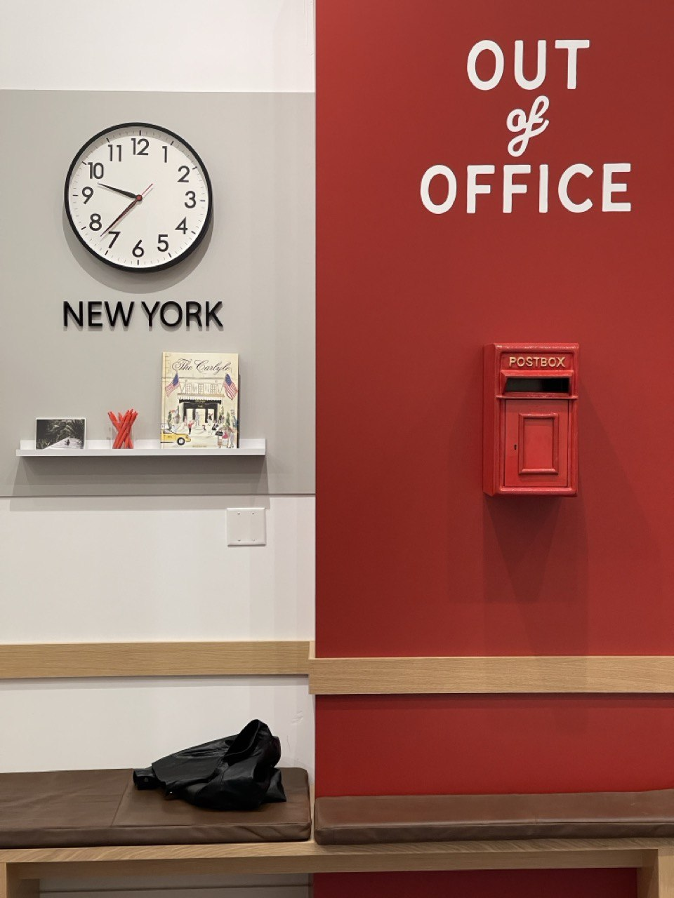
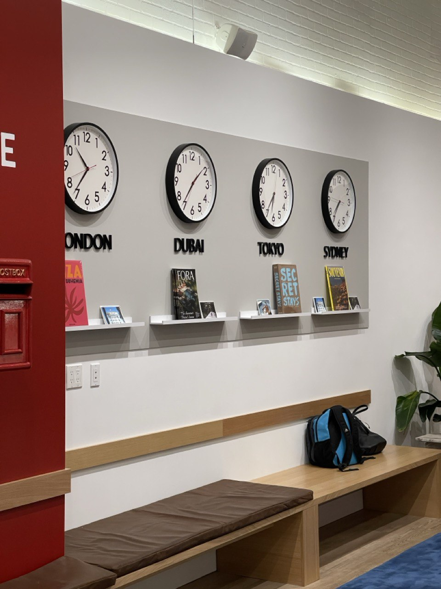
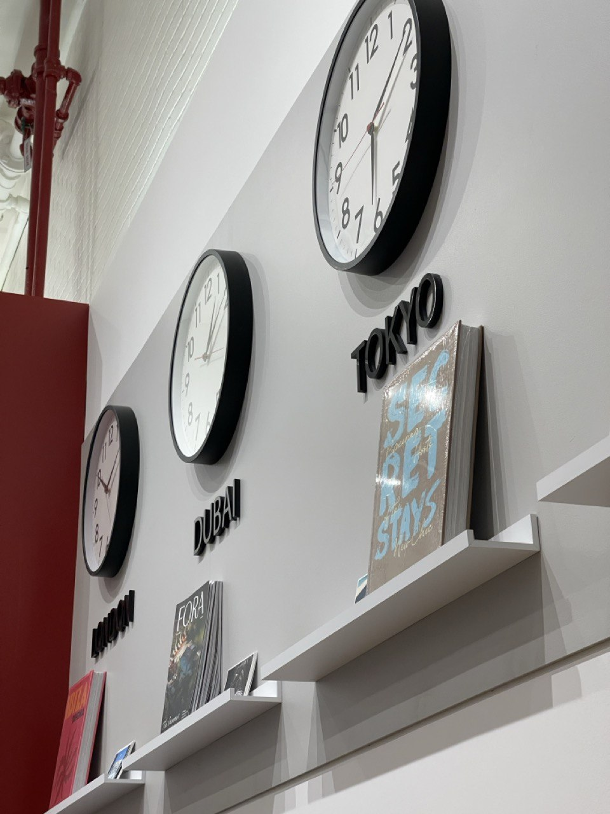
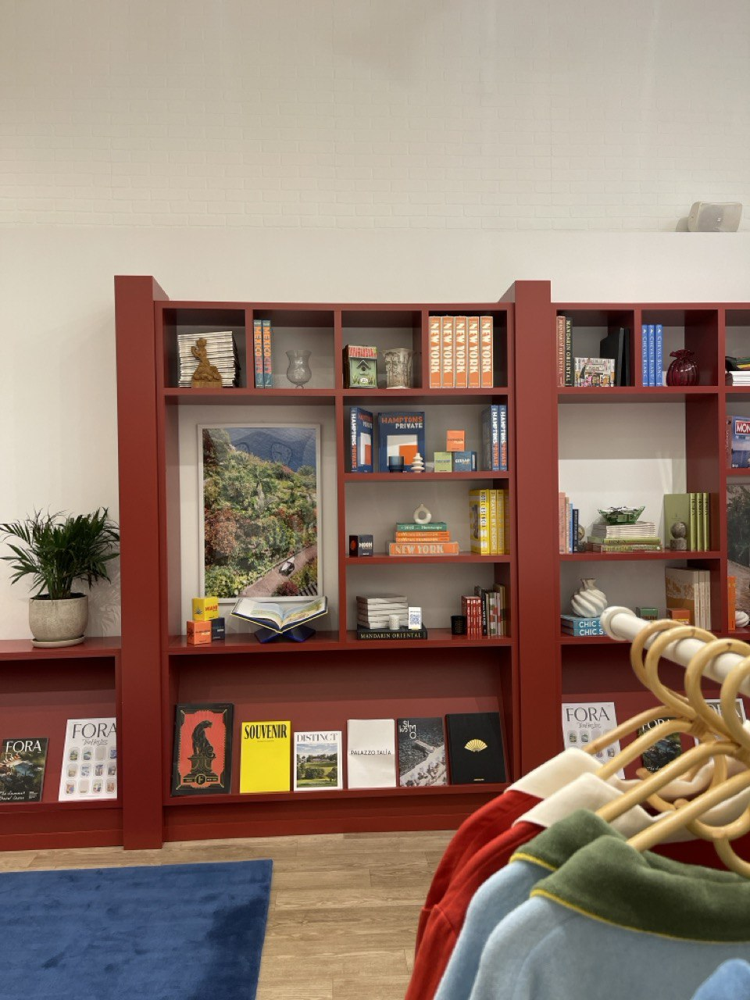
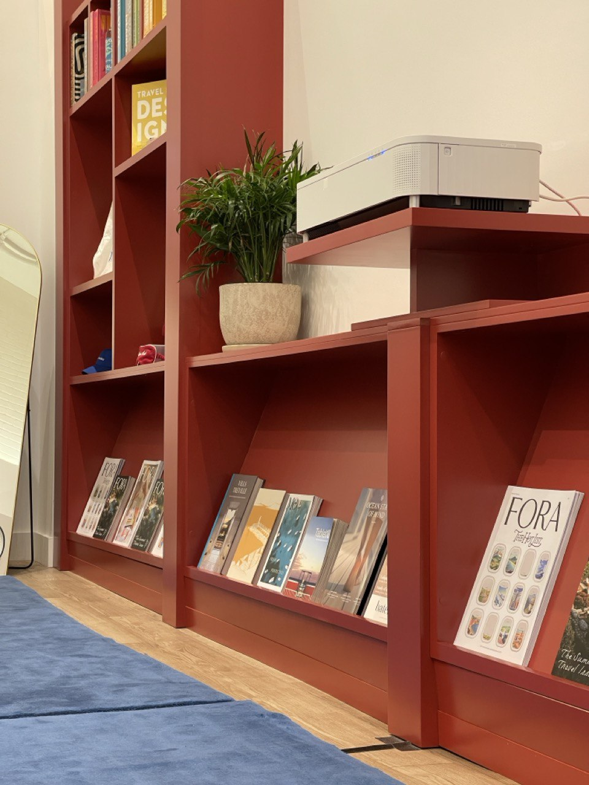
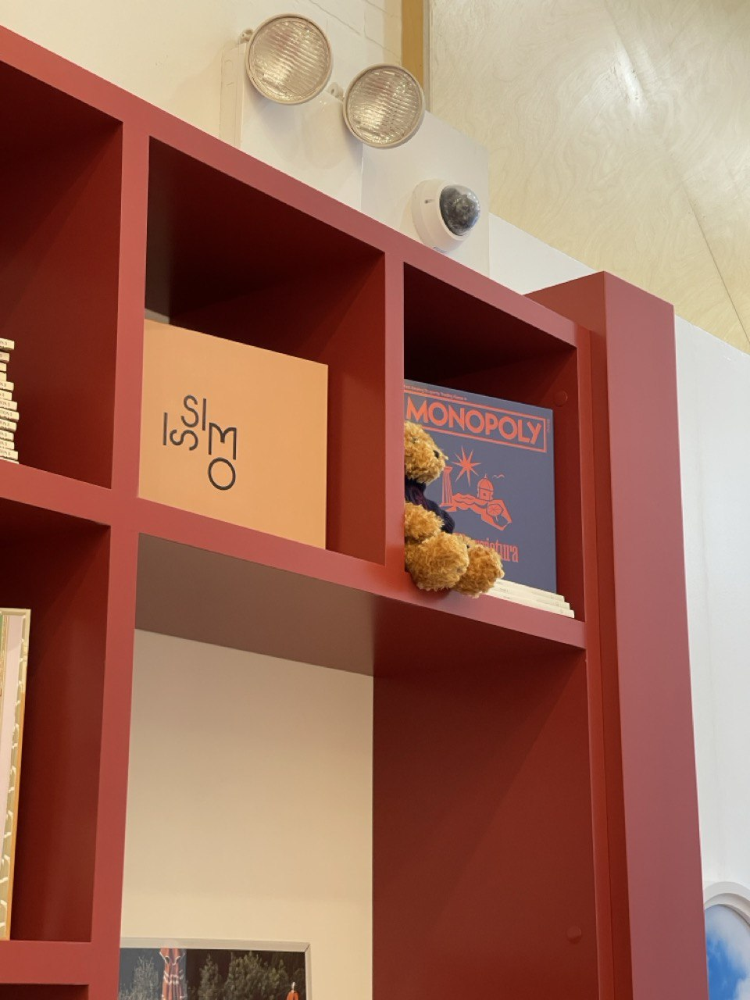

My first commercial project in SoHo. Four years ago, I was doing my first work in Flatbush Brooklyn, right after Covid — no idea what I was doing half the time, just trying to make it work. Back then I couldn't imagine having a project like this.
Fora Travel wanted a temporary retail space that felt like their brand — clean, traveled, curated. We built modular shelving systems that could be reconfigured, styled with high-end travel books, added world clocks and a British postbox for character. Three weeks from start to install.
I worked with Sviat Oryniak on the build. No sleep, just work. The pop-up closed after its run, but the shelving units got a second life — we moved them to Fora's permanent Tribeca office.
Looking back, this one changed everything.







